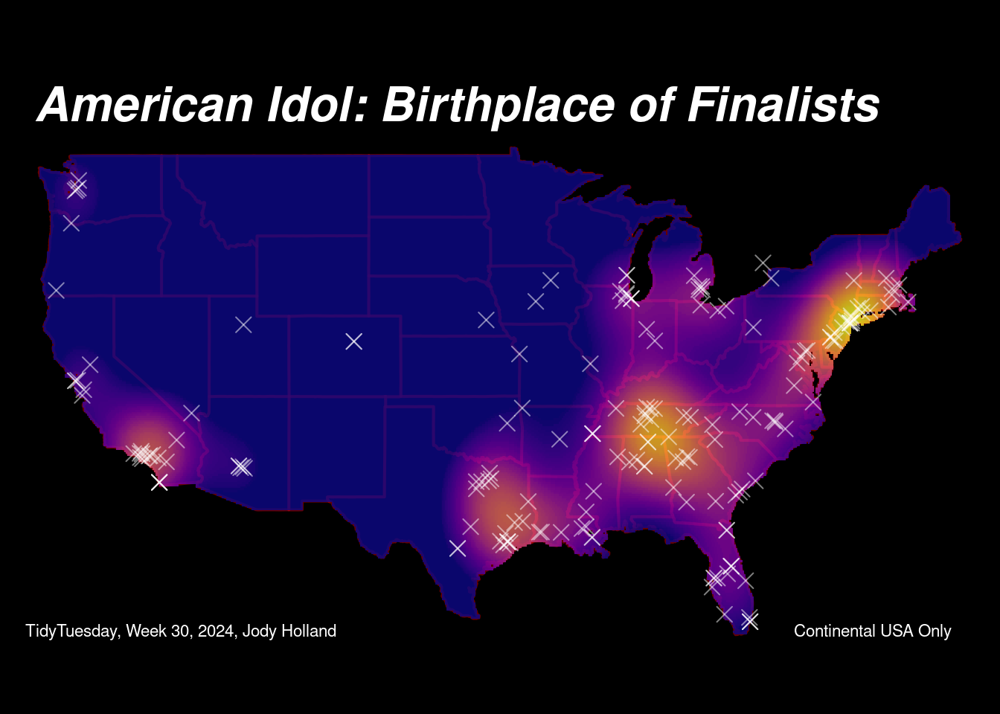

# load packages
library(tidyverse)
library(tidytuesdayR)
library(sf)
library(tidygeocoder)
library(tmap)
library(maps)
library(terra)
library(extrafont)
# load tt data
finalists_tbl = read.csv("finalists.csv") %>% as_tibble()
# load map of continental us data
cont_map = map("state", plot = FALSE, fill = TRUE)American Idol Birthplaces Heatmap
2024, Week 30
Packages and Data
Data Wrangling
# create tbl from finalists and fix string errors
finalists_tbl$Contestant[55] = "José 'Sway' Penala"
finalists_tbl$Contestant[190] = "Uché"
# fill in missing and false data
# create tbl of missing data
missing_tbl = tibble(
Contestant = c("Curtis Finch, Jr.",
"Devin Velez",
"Burnell Taylor",
"Stevie Scott",
"Jennifer Hudson",
"Amber Holcomb",
"José 'Sway' Penala"),
Birthplace = c("St. Louis, Missouri",
"Chicago, Illinois",
"New Orleans, Louisiana",
"Sacramento, California",
"Chicago, Illinois",
"Houston, Texas",
"San Francisco, California"))
# merge missing data and fix birthplace
finalists_tbl = finalists_tbl %>%
left_join(missing_tbl, by = "Contestant") %>%
mutate(Birthplace = ifelse(!is.na(Birthplace.y),
Birthplace.y, Birthplace.x)) %>%
select(-Birthplace.x, -Birthplace.y)Converting to Spatial Data
# find cords from each birthplace
finalists_with_coords = finalists_tbl %>%
geocode(Birthplace, method = "osm", lat = latitude, long = longitude)Passing 164 addresses to the Nominatim single address geocoderQuery completed in: 165.5 seconds# create sf from coords
finalists_sf = finalists_with_coords %>%
st_as_sf(coords = c("longitude", "latitude"),
crs = 4326) %>%
select("Contestant",
"Birthplace",
"Season")Interactive Map
# ensure the Season column is correctly formatted
finalists_sf$Season = as.character(finalists_sf$Season)
finalists_sf$Season = paste("Season", finalists_sf$Season)
# ensure the Season column is a factor with the correct ordering (alphabetic causes errors)
finalists_sf$Season = factor(finalists_sf$Season,
levels = paste("Season", sort(unique(as.numeric(gsub("Season ", "", finalists_sf$Season))))))
tmap_mode("view")
tm_shape(finalists_sf) +
tm_dots(col = "Season", palette = "viridis", size = 0.5,
popup.vars = c("Contestant",
"Birthplace",
"Season")) +
tm_layout(legend.title.size = 1,
legend.text.size = 0.8,
legend.outside = TRUE,
legend.outside.position = "right")Making Heat Map Raster
# disable s2 for spatial operations
sf_use_s2(FALSE)
# get the map of the continental usa and convert to sf object
cont_map = map("state", plot = FALSE, fill = TRUE)
cont_sf = st_as_sf(cont_map)
cont_sf = st_transform(cont_sf, crs = st_crs(finalists_sf))
cont_sf = st_make_valid(cont_sf)
# convert to spatvector
cont_vect = vect(cont_sf)
# filter finalists data using the continental map
finalists_cont_sf = st_intersection(finalists_sf, cont_sf)Warning: attribute variables are assumed to be spatially constant throughout
all geometries# convert to spatvector
finalists_cont_vect = vect(finalists_cont_sf)
# create a raster template
finalists_template = rast(ext(cont_vect),
resolution = 0.1,
crs = crs(cont_vect))
# rasterize the points to create a density raster
finalists_mask = rasterize(finalists_cont_vect, finalists_template, 1, background=NA)
# create a gaussian kernel for smoothing
finalists_kernel = focalMat(finalists_mask, 2, "Gauss")
# apply the kernel to the raster to create a heatmap
finalists_heat = focal(finalists_mask, w = finalists_kernel,
fun = sum, na.rm = TRUE)
finalists_heat[is.na(finalists_heat)] = 0
# mask the heatmap with the continental USA map and scale the values
finalists_heat = finalists_heat %>%
mask(cont_vect) %>%
scale()Plotting Heat Map Raster
tmap_mode("plot")tmap mode set to plotting# plot
tm_shape(cont_sf) +
tm_borders(col = "red", alpha = 0.4, lwd = 2) +
tm_shape(finalists_heat) +
tm_raster(style = "cont", palette = "plasma",
title = "Value", alpha = 0.8) +
tm_shape(finalists_sf) +
tm_symbols(shape = 4, col = "white",
size = 0.5, alpha = 0.5) +
tm_layout(
main.title = "American Idol: Birthplace of Finalists",
main.title.position = "left",
main.title.fontface = "bold.italic",
main.title.color = "white",
main.title.size = 2,
legend.show = FALSE,
fontfamily = "sans",
bg.color = "black",
outer.bg.color = "black",
frame = FALSE) +
tm_credits("TidyTuesday, Week 30, 2024, Jody Holland",
position = c("LEFT", "BOTTOM"), col = "white") +
tm_credits("Continental USA Only ", col = "white",
position = c("RIGHT", "BOTTOM"))